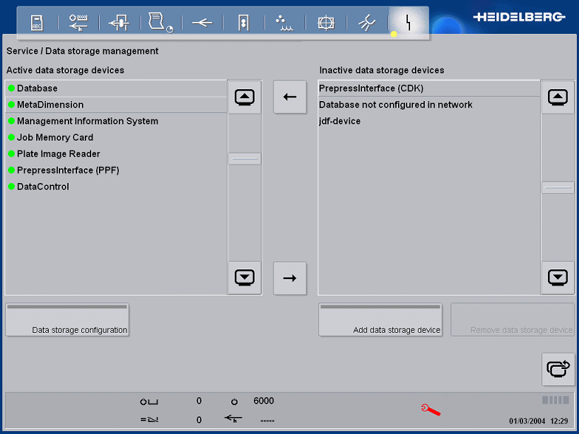

Сначала зайдите в форму «Управление сервисом / хранением данных» с помощью «Услуга > Управление хранением данных» (более старые версии CP2000) или «Услуга > Конфигурация объекта > Управление хранением данных» (более новые версии CP2000). Устройство «MetaDimension» (или любое другое название устройства) должно быть в списке «Активные устройства хранения данных».

После выбора «MetaDimension» в «Активных устройствах хранения данных» вы можете настроить устройство, нажав кнопку «Конфигурация хранения данных». Затем для этого устройства будет показан список настраиваемых параметров.
Первый параметр, «DeviceName», позволяет выбрать любое имя для устройства. Если имя не вводится, используется «MetaDimension». Например, вы можете ввести «Принц Стрелок».
Для параметра «URL» вы должны ввести URL-адрес, включая номер порта, HTTP-сервера, который предоставляет Prinect Shooter.
После установки Prinect Shooter URL-адрес устанавливается следующим образом:
URL = http://hostname:port number//ImageSetter
«Имя хоста» может быть либо буквенно-цифровым компьютерным именем сервера, либо IP-адресом сервера, введенным в этой форме: aaa.bbb.ccc.ddd. Например, имя компьютера «localhost» также используется в качестве синонима для локального компьютера и его IP-адрес: «127.0.0.1» (это действительно в целом).
Из опыта вы должны использовать цифровой IP-адрес, так как это позволяет избежать необходимости сначала назначать имя хоста IP-адресу. Это действие может включать более длительное время отклика.
Номер порта и «ImageSetter» устанавливаются Prinect Shooter, и ваш URL выглядит следующим образом:
URL = http://hostname:49300/ImageSetter
с именем хоста, обозначающим компьютер Prinect Shooter или его IP-адрес.
Другие параметры позволяют активировать или деактивировать отображение определенных столбцов в списке заданий. Только при вводе одной («1») колонка, о которой идет речь, будет указана в списке заданий. С другой стороны, ноль («0») означает, что колонка не будет показана.
Параметры присваиваются следующим колонкам:
|
Показать или не показать изображения предварительного просмотра |
Copyright © 2013 Heidelberger Druckmaschinen AG